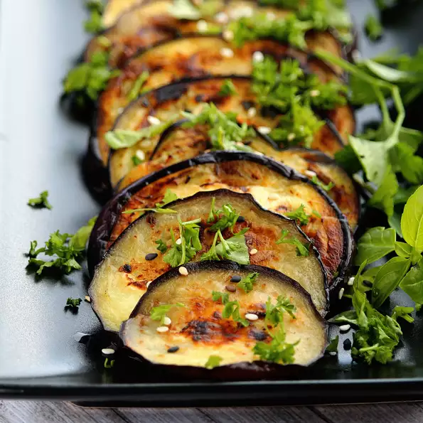

Italian Grilled Eggplant

This side dish (or "contorno" if you want to use the Italian word) couldn't be easier! We make this often during the summer when we have an abundance of basil and parsley growing in our garden. Works well with zucchini, too.
Ingredients
- 1 eggplant, sliced into 1/2-inch rounds
- ⅓ cup extra virgin olive oil
- 2 cloves garlic, minced
- ⅛ teaspoon salt
- 2 tablespoons chopped fresh basil
- 1 tablespoon chopped fresh flat-leaf parsley